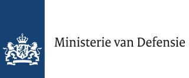
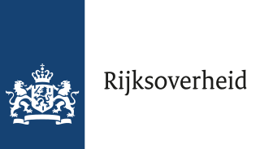
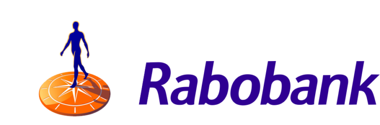
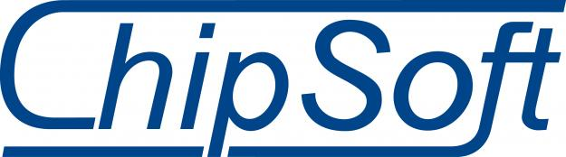
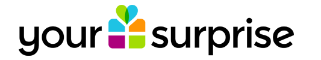
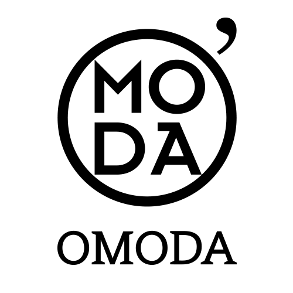
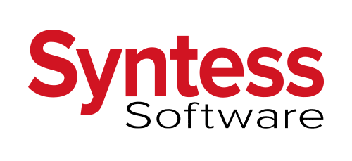

Ministerie van Defensie
Defensie telde in 2014 circa 47.000 medewerkers en is daarmee een van de grotere werkgevers van Nederland. Ondanks dat je bij Defensie sneller aan lichamelijk werk zou denken, zijn er ook veel ICT-medewerkers. Denk bijvoorbeeld aan het testen van kwetsbare systemen door ze te hacken, het beveiligen van de eigen systemen door middel van detectietechnieken en het virtueel ondersteunen van cyberacties. Voorbeelden van functies bij Defensie zijn Officier ICT, Officier Specialist Cyber, Luchtsverkeersleider, Luchtsgevechtsleider en Officier Communicatie.
Rijksoverheid
De Rijksoverheid is het onderdeel van de Nederlandse overheid dat wettelijke taken heeft op landelijk niveau. Het Rijk telt ruim tweehonderd uitvoeringsorganisaties. Voorbeelden van deze uitvoeringsorganisaties zijn de Belastingdienst, Rijkswaterstaat en de Onderwijsinspectie. Voorbeelden van IT-functies bij Rijksoverheid zijn Applicatiebeheer, Front End Developer, Software-architect, Technisch Beheerder Cybersecurity en IT-Specialist Vernieuwing & Innovatie. Bij de Rijksoverheid werken zo'n 120.000 mensen.
Rabobank
Rabobank is een internationale financiele dienstverlener met wortels in Nederland. Het bedrijf werd opgericht in 1972. In Nederland heeft Rabobank 6,7 miljoen particuliere en 800.000 zakelijke klanten. Wereldwijd zijn dat er nog een stuk meer: 10 miljoen klanten. Ondanks dat Rabobank een Nederlands bedrijf is, is de bank actief in veertig landen. Voorbeelden van functies bij de Rabobank zijn Data Science Scriptant, ICT Artificial Intelligence, ICT Docker Container, ICT Internal Reporting Business Intelligence en Software Engineer. Bij Rabobank draait het steeds meer om data omdat hun klanten 24/7 overal hun bankzaken in moeten kunnen zien. Ook kun je denken aan dingen zoals blockchain en cybersecurity die IT bij de Rabobank in deze tijd zo belangrijk maken.
Capgemini
Capgemini is een Frans consultancybedrijf dat voornamelijk gericht is op ICT en consultancy. Voorbeelden van functies bij Capgemini zijn Test Automation Consultant, Oracle Consultant, Java Custom Software Developer en Agile Testconsultant. Het bedrijf probeert zich te houden aan 7 kernwaardes: eerlijkheid, durf, vertrouwen, vrijheid, teamgeest, eenvoud en plezier. De bedrijfsstructuur bij Capgemini is opgebouwd in grades:
- Assistant
- Consultant
- Senior Consultant
- Managing Consultant
- Principal Consultant
- Vice President
Er zijn wereldwijd 40 vestigingen, en ondanks dat het een Frans bedrijf is is het hoofdkantoor in Utrecht - Leidsche Rijn.
ChipSoft
ChipSoft is een bedrijf dat de software in zorginstellingen verzorgt. De ambitie van ChipSoft is nieuwe software blijven ontwikkelen die zorgverleners ondersteunt in de levering van de zorg aan de patient. Het bedrijf heeft naast medische functies ook veel ICT functies. Voorbeelden hiervan zijn .NET ontwikkelaar en Software Consultant.
Bedrijvensafari
YourSurprise
YourSurprise is een webwinkel gespecialiseerd in gepersonaliseerde kado's. De website ging live op 13 juni 2015, in die tijd werd er nog gewerkt vanuit een zolderkamer. Inmiddels werken er meer dan 90 mensen bij het bedrijf, waaronder magazijnmedewerkers, seo-marketeers, fotografen, PHP developers, en javascript developers. Omdat ze inmiddels live zijn in bijna alle west-europese landen, werken er ook veel vertalers en copywriters.
De missie van Yoursurprise is 'Aim for the moon'.
O'Moda
O'Moda is een familiebedrijf/ schoenenwinkel uit Burgh.
De eerste winkel werd in 1961 opgericht in Zierikzee. Sinds 2007 heeft O'Moda een online shop waar je schoenen kunt bestellen. Inmiddels is het niet alleen .nl webshop maar zijn er ook .de, .be en .com varianten. In 2016 werkten er 400 mensen, waaronder verkoopmedewerkers, seo specialisten en magazijnmedewerkers. Er zijn 18 winkels, waaronder 1 in Antwerpen. Daarnaast is er een hoofdkantoor met magazijn en distributiecentrum in Zierikzee. De missie van O'Moda is 'We maken de leukste trends toegankelijk en jouw outfit compleet'.
Afdelingen HR, Marketing, Klantenservice en Inkoop
Distributiecentrum en magazijn
Syntess
Syntess Software is opgericht in 1987. Ze bieden software voor kleine middelgrote en grote bedrijven. Tot hun klantenkring behoren installatiebedrijven, bedrijven uit de bouwsector, onderhoudsbedrijven en bedrijven uit de machinebouw. De visie van Syntess Software is 'De hoogst mogelijke mate van klanttevredenheid bereiken en u helpen om een hoger niveau van werken te bereiken'. Bij Syntess Software ontwikkelen ze praktijkgerichte software. ERP (Enterprise Resource Planning) biedt, in plaats van meerdere softwareproducten, 'e'en geintegreerd software pakket voor alle processen binnen een bedrijf. Er werken voornamelijk veel software developers, maar er werken ook o.a. HR-managers, systeembeheerders en technisch support medewerkers. Het hoofdkantoor is gevestigd in Zierikzee.